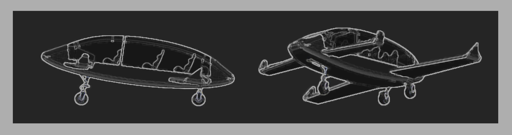
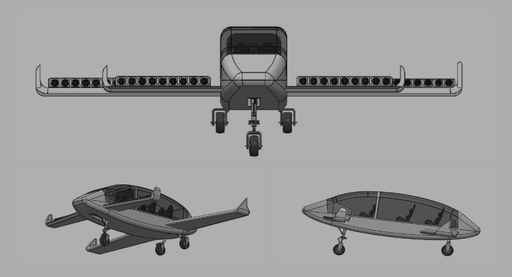
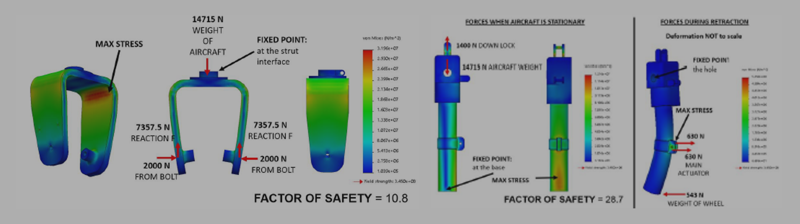
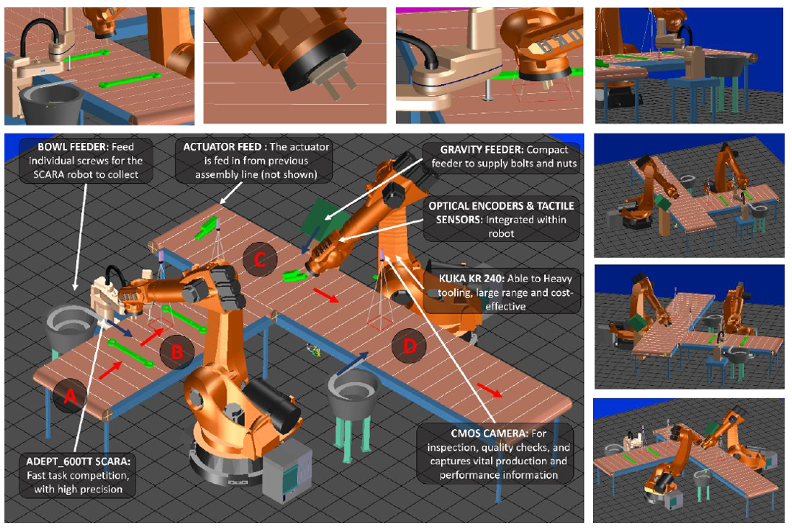

tinkering around
< |
Hybrid Light Aircraft | Design
May 2019 | Posted on 21st Jan 2022
Lambda Air
The Commuter Lambda Air is a hybrid light aircraft, replacing conventional cars. The aircraft
is designed for vertical take-off and landing. Introducing a new dimension to private transport
at a price tag similar to a luxury car. The
Lambda Air is reliable, eco-friendly and sustainable.

The aircraft can hold up to 5 passengers and extra accessories. The fuselage internals
can be modified for load transport, such as food, water and medical supply for humanitarian missions.
The aircraft can cruise at low altitudes at around 200-250 mph, with a
range of up to 1000 miles.

A hybrid power system is implemented in this design which contains hydrogen peroxide fuel
cells, Li-battery and diesel fuel cells. Closed loop controlled methods are applied to
stabilize the operations of the subsystems, and the
behaviour of DC and AC loads are constantly monitored.
The aircraft is able to conduct VTOL (vertical take-off and
landing) using the 48 fans located on the wings, with 270 degree rotational capability. VTOL reduces the load
on the landing gear, and significantly extends the life-cycle of the landing gear components. However,
during emergency situations, such as failure in the fan or power, the aircraft will be able to use backup
power to autonomously land the aircraft using CTOL (conventional take-off and landing).
The Landing Gear
The objective of the landing gear design, is to utilise light
materials and effective design to achieve efficient, low mass flight, whilst reducing cost of manufacturing.
As this is a small aircraft, a retractable landing gear would decrease the drag significantly during flight, as the landing
gear accounts for approximately 18% of the frontal area.

The landing gear was redesigned to improve the quality, reduce material waste and increase safety, whilst
facilitating for an automated manufacturing process.

The factor of safety for the strut and the wheel bracket, 28.7 and 10.8 respectively,
exceeds the recommended aircraft safety factor of 1.5 to 2.5. A lower factor safety
was achieved by changing the material in correspondence to a lower yield strength.

The Finite Element Analysis (FEA) shows that the high stresses have been reduced significantly from the previous design.
The revised shock strut design, had a maximum stress of 2.42 MPa, compared to the previous 12.2 MPa (80.1% reduction),
and a new factor of safety of 2.1. The revised wheel bracket design has a maximum stress of 18.6 MPa, and the yield
strength of the wheel is 27.5 MPa (1350 Aluminium Alloy). The maximum stress has decreased by 41.9%. The wheel
bracket has a safety factor of 1.5.
The yield strength of the wheel is 27.5 MPa (1350 Aluminium Alloy),
however maximum fatigue shown on the wheel bracket is 18.6 MPa, therefore failure is minimised.
Automated Manufacturing Process
The image below shows the assembly line configuration using a software called eHub 27.2.
The red arrows show the flow of the main sub-assembly.

Further Reading
For more information about this project check out the documents below.